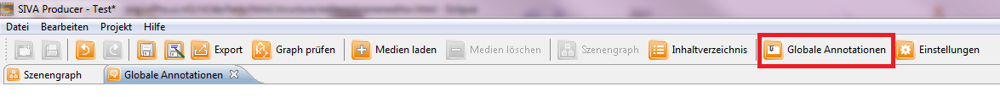

Annotation-Editor
You need the annotation-editor to add further elements as pictures, text, videos, audio files, html elements or links to external sites
to a scene. These ressourcen can be created in one of the editors or in an external programme and then they can be imported as a
ressource into the ressource-repository. Generally the SIVA Producer supports three annotation editors. The Richtext-Editor can be
used to format texts with pictures, links and html-markup elements. Furthermore there is a plaintext-editor. Content that has
already been loaded and are saved in the ressource-repository can also be added as an annotation to a scene.
There are two different types of annotations: the global annotations and the
scene annotations.
With help of the global annotations you can create annotations that will appear during the entire project. In the editor for scene
annotations the annotations will just be used for certain parts of the project.
Global Annotations
With the editor for global annotations you can create annotations that will appear during the entire project.
This may be useful for example if you want to use a logo or a digital watermark.
You can create the same types of annotations as for the usual scene annotations and you can choose the position for each annotation.
Now we will show you:
Open the annotation editor for global annotations
The editor for global annotations can be found in the taskbar. To open the annotation editor you have to click onto
"Global Annotations".

Here you can create annotations.

- Create new annotations
- Here you can choose between the different types of annotations (audio, picture, subtitle, video or PDF)
- If you hav chosen this type of annotation you can drag the file that you want to edit via drag and drop from the media-repository
to your workspace.
Overlay-editor
If you put an annotation into the video, the overlay-editor can be opened via doubleclick onto the indicating range.
In this editor you can change and choose the position and the size of the annotation in your video.
In the upper part of the editor you can see the timeline of the scene. For every moment you can choose the position of where your
annotation should appear. Therefore you have to choose via clicking onto the point in time the position where the annotation should
appear in the scene and then by pressing "save position" it will be saved.

Tips for file formats
You may use the following file formats:
- pictures and graphics as .jpeg or .png
- it is recommended to import video files with 1280x720 pixel that are rendered with H.264-Codec
- soundtracks (especially in video files) should be recorded with 48kHz
How to create an annotation out of the scenegraph will be shown
here.